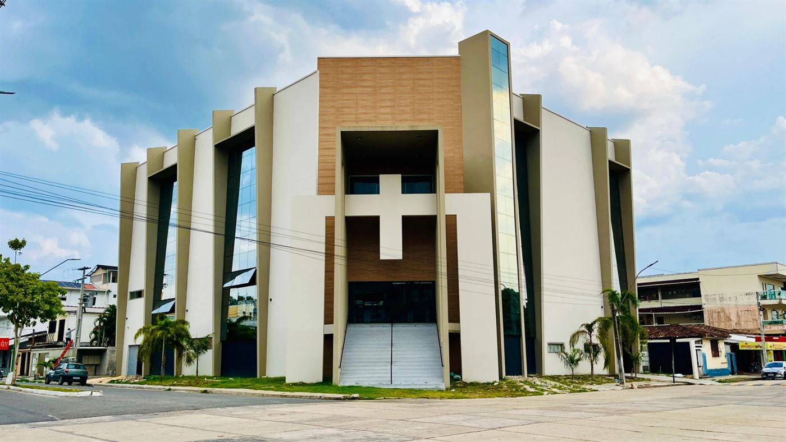
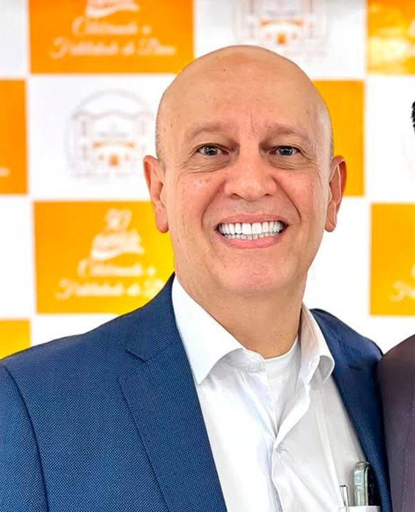
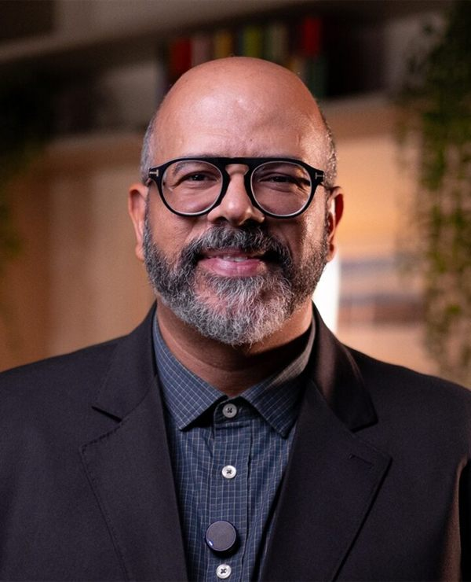
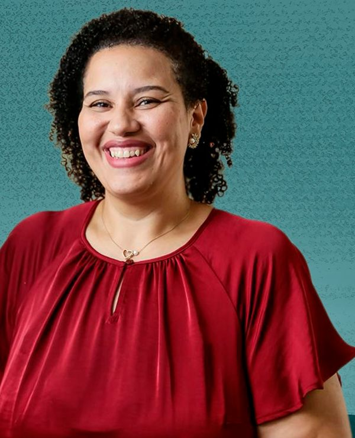
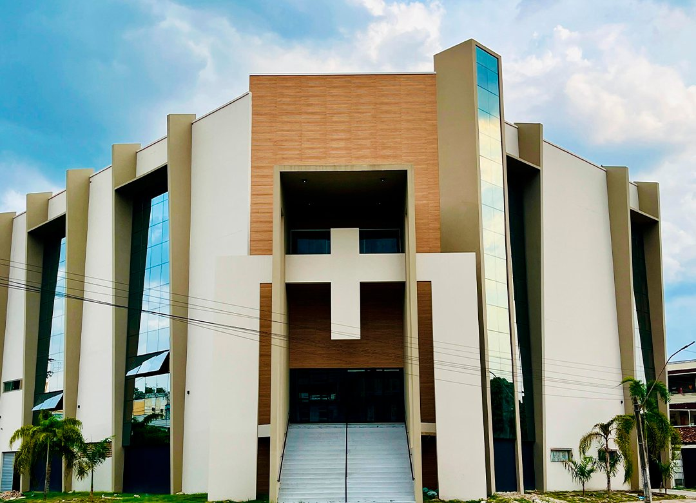

Sex13Novembro, 2026
Noite · Culto
- Abertura do culto
- Louvor: Filhos da Luz
- Pregação: Pr. Vinicius Musselman
- Cafezinho
- Pregação: Pr. Judiclay Santos
- Louvor, avisos e oração final

13, 14 e 15 de Novembro de 2026
Breves — PA
Quero me inscrever
 Igreja anfitriã
Igreja anfitriã
A Igreja Cristã Evangélica de Breves é conhecida por seu compromisso com a pregação do evangelho e o ensino das Escrituras, e tem desempenhado um papel significativo na comunidade local.
Com uma abordagem baseada na fé evangélica reformada, oferece uma variedade de programas e ministérios voltados para todas as faixas etárias. A congregação é caracterizada por sua ênfase na comunhão entre os membros, buscando promover um ambiente acolhedor e solidário, e sua liderança é comprometida com a formação espiritual dos congregantes.


Em um tempo marcado por superficialidade espiritual, confusão doutrinária e enfraquecimento da centralidade do evangelho, convidamos você para a 4ª Conferência Reformada do Marajó, um encontro de proclamação fiel das Escrituras, comunhão cristã e fortalecimento da igreja do Senhor.
Com o tema “Graça Soberana”, nos reuniremos para contemplar a majestade de Deus na obra da redenção e a glória do evangelho que salva pecadores exclusivamente pela graça, mediante a fé, em Cristo somente.
Durante estes dias, seremos conduzidos ao estudo profundo das doutrinas da graça, reafirmando as verdades eternas reveladas nas Escrituras e preservadas pela tradição reformada histórica. Em um mundo que exalta a autonomia humana, queremos anunciar novamente a absoluta soberania de Deus na salvação, na história e na vida da igreja.
Cremos que a graça soberana não é apenas uma doutrina a ser estudada, mas uma verdade que humilha o pecador, exalta a Cristo e produz verdadeira adoração.
“Jamais conheceremos verdadeiramente a nós mesmos sem primeiro contemplarmos a face de Deus.”João Calvino
Nossa oração é que esta conferência fortaleça pastores, líderes, seminaristas e toda a igreja local, encorajando homens e mulheres a permanecerem firmes na Palavra, perseverantes na santidade e comprometidos com a glória de Deus.
Três dias de pregações, palestras, louvor e comunhão

Pastor
Pastor
PreletoraIgreja Cristã Evangélica de Breves
Av. Rio Branco, 352 — Breves, PA, 68800-000
Aeroporto de Breves — Akim Diniz

Venha estudar conosco as doutrinas da graça e celebrar a soberania de Deus na salvação.